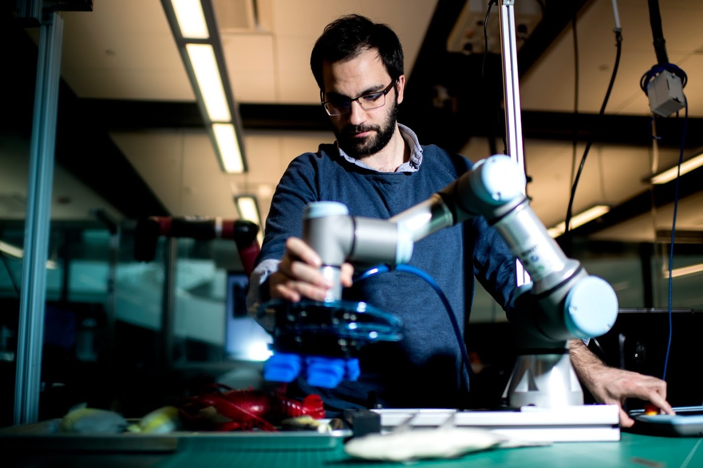

I am a PhD Student in the Computer Engineering program at Northeastern University under the supervision of Robert Platt and Taskin Padir. I completed my MS degree in the same department in 2018. I received my BS degree in Electrical and Electronic Engineering from TOBB University of Economy and Technology in Turkey. My research interests lie at the intersection of machine learning and robotic manipulation. Specifically, I am interested in methods combining classical robotic algorithms with data-driven methods with applications to tactile manipulation. I also lead a team of students, Team Northeastern, to participate in the RoboCup@Home Challenge.
Tarik Kelestemur, Taskin Padir and Robert Platt.
International Conference on Intelligent Robots and Systems (IROS, 2021) [submitted]
Tarik Kelestemur, Colin Keil, John P. Whitney, Robert Platt and Taskin Padir.
International Conference on Intelligent Robots and Systems (IROS, 2020)
Tarik Kelestemur, Naoki Yokoyama, Joanne Truong, Anas Abou Allaban and Taskin Padir.
ACM International Conference on PErvasive Technologies Related to Assistive Environments (PETRA, 2019)
Philip Long, Tarik Kelestemur, Aykut Özgün Önol and Taskin Padir.
International Conference on Robotics and Automation (ICRA, 2019)
This is a list of some of the research-related codes. They don’t have documentation and they are mostly not commented but you can reach me if you have any questions.